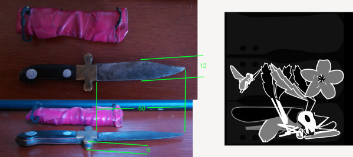
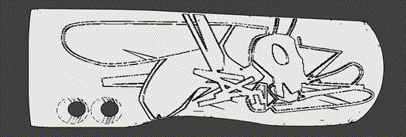
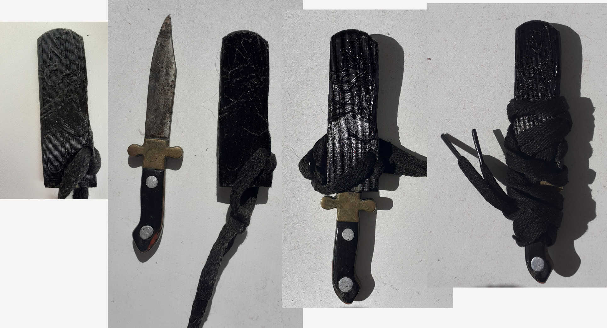
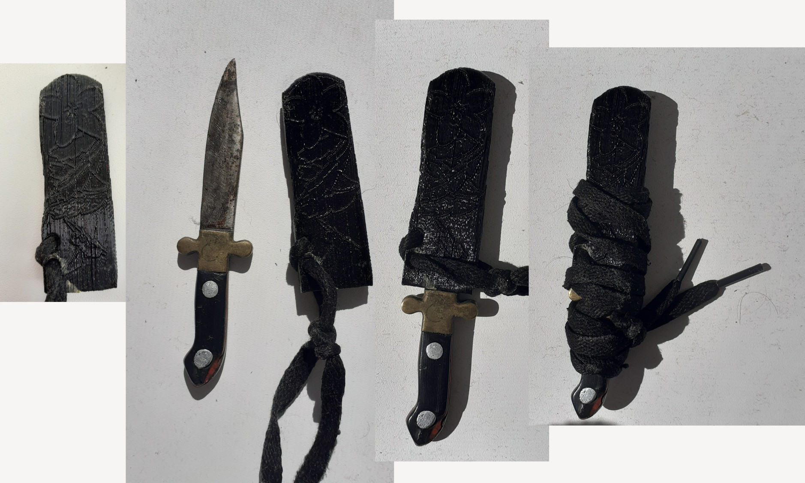

Как известно (мне), у нормального человека при себе должно быть два ножа. Один у меня раскладной, а у второго импровизированные ножны из мотка изоленты. Пока у меня был 3d принтер я решил заменить ножны на что-то покрасивше.
It is said (by me) that a normal person should carry two knives. I carry a pocket knife and the other has an improvised sheath made out of duct tape. So while I had access to a 3d printer I decided to build better and improved sheath as a replacement.


Как можно заметить, рисунок содержит узнаваемые предметы моего увлечения.
It's easy to see the pattern design includes symbolic depictions of my hobbies.

